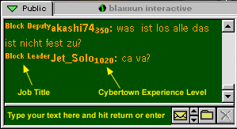

Overview | 2D Chat | 3D Chat | Voice Chat
Overview:
If you are a member of Cybertown you can access 2D and 3D chat and
message boards and have a virtual blast buying or trading objects and
interacting with other people and avatars. You can also invite your friends
to your very own 3D home to hang out or party. Not a member? Immigrate
now! It's free and you're missing the party so hurry-up.
You can choose to start your chat in 2D or 3D mode by selecting a Chat default on your Personal Info page.
2D Chat:
2D chat is really good if you just want to talk to someone quickly and then get out of town. It is also the way to go when you are using someone else's computer and they don't have the blaxxun Contact software or it wouldn't be right for you to install it there.
To start chatting when you are in the 2D mode just click in the text box
below the chat window and start typing what you want to say. Hit the Enter
or Return key on your keyboard or click the Send button. To see the various chat options (colored text, font size, using images) you can type /options in the chat window or go here. If you click on a person's name you can whisper to him, invite him to private chat or ignore him.
Now you're talking!
Requirements for 3D Chat:
If you are a member of Cybertown you can join in the chat. Not a member
yet? What are you waiting for - Immigrate
now!
To access 3D chat and enter the 3D worlds in Cybertown you need to download the free plug-in called blaxxun Contact from the blaxxun website. If you haven't done that already then please read Get Into 3D for more information.
Jump into 3D Chat:
Okay, just for the record...3D chat is waaaaayyyyy cooler then 2D
chat. Once you have the plug-in installed, enter Cybertown and look to
the right to find and click the  button. You will enter the 3D City Plaza.
button. You will enter the 3D City Plaza.

You get a lot more information on the chatters when you are in 3D.
If your native language is not English, you can change the labels and
standard information in the software to display in an alternate language.
Find the Options tab to the right of the chat window and choose
Language. You'll get a pop up window from which you can choose
English, French, German or Spanish. The other tabs enable you to see who is in the room you're in, which other places are open, which objects are available to buy, what's in your backpack, the chat logs and a number of other options - including changing your avatar (see Get into 3D at the How Do I?" page). If you click on a person's name you can whisper to him, invite him to private chat or ignore him.
Voice Chat:
The preliminary requirement for this software is that you have a sound
card in your computer and some kind of speakers. Oh yeah...it only works
when you're surfing Cybertown in 3D.
This is the way to get the Voice Chat software when you are new to Cybertown.
1. Download the most recent version of the blaxxun Contact software
2. Sometime during this process you will be asked if you want the additional
download of the text to voice software. Say yes.
So I guess now you want to change the sound of your voice? Read on...
Getting only the Voice Software and how to change your voice:
Go
to Options and choose Voice, if
you don't already have the Voice software you will be asked if you want
it.
After choosing Voice you will get a popup window that will allow you to choose the kind of voice you want to use. You can change your voice at any time.
Happy Chatting!
Related Subjects: Mute Voices | Use
Message Boards
Get Into 3D | Cybertown Clubs